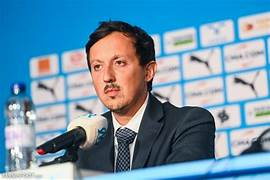

OM was founded on August 31, 1899. The club played at the Huveaune stadium from 1904 to 1937, the date on which the Vélodrome stadium was inaugurated. In September 1899, the Football Club merged with the Spotie l'Epée company; At the end of that same year, the office voted to change the name "Football Club" to "Olympique de Marseille", the name under which the club was registered in December 1899. Marseille briefly took the name Olympique Etoile Bleue during the 1904 season. -1905, following its merger with Stade Etoile Bleue, another Marseille club, before becoming Olympique de Marseille again the following season.


Club president :
Pablo Longoria
He has been president since February 26, 2021.

Trainer:
Gennaro Gattuso
He has been a coach since September 2023.
| National competitions |
|---|
| French championship league: champion in 1937, 1948, 1971, 1972, 1989, 1990, 1991, 1992, 2010 |
| Runner-up 1938, 1939, 1970, 1975, 1987, 1994, 1999, 2007, 2009, 2011, 2013, 2020, 2022. |
| French division 2 championship: champion in 1995 |
| Vice-champion 1966, 1984, 1996 |
| French Cup: winner: 1924, 1926, 1927, 1935, 1938, 1943, 1969, 1972, 1976, 1989 |
| Finalist 1934, 1940, 1954, 1986, 1987, 1991, 2006, 2007, 2016 |
| Champions Trophies: winner 1971, 2010, 2011 |
| Finalist 1969, 1972, 2020 |
| International competitions |
|---|
| Champions League: winner 1993 ; finalist: 1991 ; semi-finalist in 1990 |
| European Cup Winners' Cup: semi-finalist 1988 |
| UEFA Cup/Europa League: runner-up 1999, 2004, 2018 |
| Europa Conference League: 2022 semi-finalist |
| Intertoto Cup: 2005 winner |